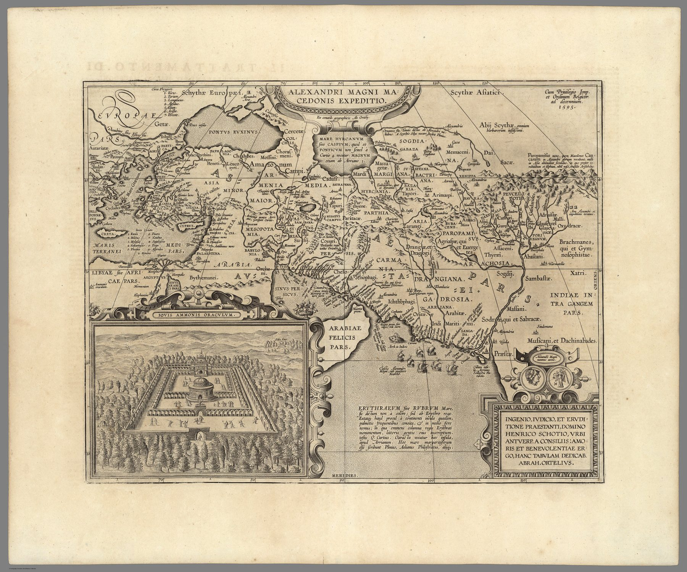

The plate and the impression
The plate is dated 1595 and belongs to Ortelius’s Parergon, the historical supplement to the Theatrum. The archive copy represented here was issued in the Italian Theatro del Mondo published by Jan Baptista Vrients after Ortelius’s death. The engraving is attributed to Jan Wierix.
Mapping a campaign
The map reconstructs Alexander’s movement from the Mediterranean world through Persia and Central Asia toward the Hydaspes and Indus. Its place-names, peoples and routes are derived from classical authors. The inset of the oracle of Ammon further announces the map’s historical character.
Humanist cartography
Unlike many maps in the Theatrum, which Ortelius reduced from modern authorities, the Parergon expressed his own antiquarian scholarship. Textual criticism became cartography: ancient narratives reconciled and converted into a spatial argument.
The gaze
For Ortelius the Indus was where a story ended. The sheet follows Alexander eastward and stops where his army stopped, so India appears only as the bank on which a Macedonian campaign turned back. Renaissance readers had met the subcontinent in the ancient historians before any Portuguese report reached them, and this map gives that reading coordinates.